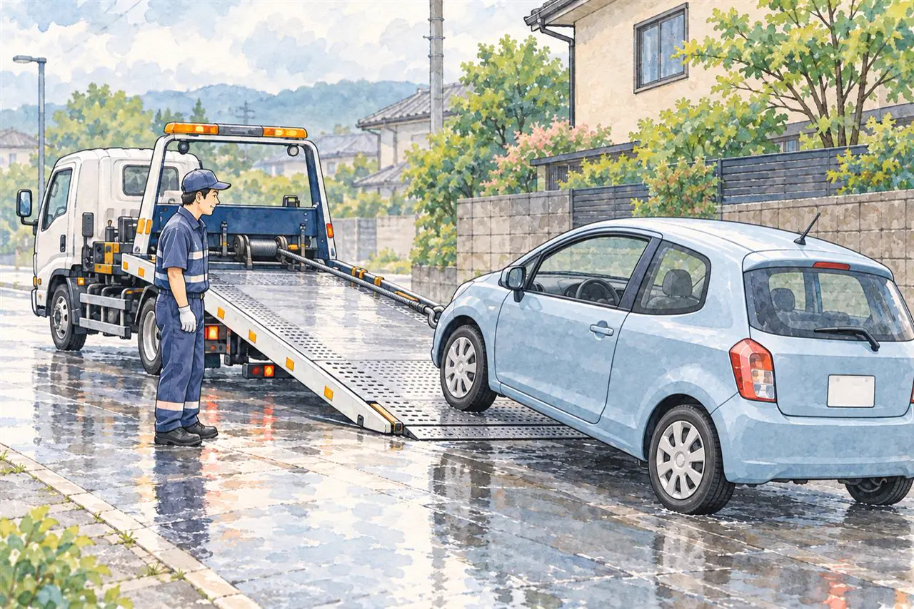

大雨・台風で車が水につかったら
水没・冠水した車は、廃車できる？
エンジンをかける前にすること、保険・税金・手続き
公開
こんにちは、東京都足立区江北で自動車解体・廃車買取をしている「大崎商店 環七店」です。
「大雨で、駐車場の車が水につかってしまった」
「冠水した道を走って、車が止まった」
「水が引いたら、エンジンをかけてみてもいい？」
台風やゲリラ豪雨のあと、車が水につかってしまい、どうすればよいのか分からないというご相談があります。
この記事では、水没・冠水した車を見つけたときに最初にすることと、やってはいけないこと、そして廃車にするときの保険・税金・手続きを、やさしくご紹介します。後半では、足立区の大崎商店の場合もご案内します。
① 水につかった車を見つけたら、まず安全に

国土交通省やJAFは、浸水・冠水した車について注意を呼びかけています。主な対応は次のとおりです。
- 自分で、エンジンをかけない
- 使用する場合は、購入した販売店、または最寄りの整備工場に相談する
- ハイブリッド車・電気自動車は、高電圧バッテリーを搭載しているため、むやみに触らない
- バッテリーや電気系統の処置は、専門業者に相談する。端子の取り外しや絶縁を、ご自身の判断で始めないでください。JAFも、浸水した車は自分でバッテリーを外そうとせず、ロードサービスや販売店・整備工場に相談するよう案内しています（JAFの案内）
水が引いて、見た目に問題がなさそうでも、エンジンの中や、電気の配線に、水や泥が入っていることがあります。そのままエンジンをかけると、車が壊れるだけでなく、ショートによる発火や感電のおそれもあります。
安全のために、次のことを守ってください。
- まず人の安全を優先し、冠水している場所へ車を確認しに行かない。避難の必要があるときは、車や撮影より避難を優先します
- エンジンをかけない・始動スイッチを押さない。ジャンプスタートや充電も、ご自身の判断で試さないでください
- ハイブリッド車・電気自動車は、車体やオレンジ色の高電圧配線に、むやみに触らない
- 水の中に入ったり、ご自身で車を押して動かしたりしない
- 写真は、安全な場所から撮れる場合だけ残す。車内へ入ったり、車に近づいたりしてまで撮影する必要はありません
② 修理するか、廃車にするか
水没した車は、水につかった深さや、水の種類（雨水か、泥水か、海水か）によって、傷み方が大きく変わります。
水の高さだけで、「修理できる」「廃車にする」とは決められません。 車種によって吸気口や電装品の位置が異なり、低い位置までの浸水でも、走行中に水を吸い込むなどして損傷する場合があります。海水に浸かった車は、塩分による腐食にも注意が必要です（JAF・浸水した車の扱い）。
販売店や整備工場には、次のことを伝えましょう。
- いつ、どこで水に浸かったか
- 駐車中だったか、走行中だったか。途中でエンジンが止まったか
- 分かる範囲で、水の高さ・浸かっていた時間・泥水や海水かどうか
- 水没後にエンジンをかけたか、電源を入れたか
修理できるか・安全に使えるかは販売店や整備工場に、補償の対象や金額は保険会社に確認しましょう。
修理の判断では、におい・カビや、あとから起きる電気系統の故障なども確認します。修理代と、車の価値、これからの使い方を考えて、判断しましょう。
③ 保険で、どこまで補償される？
台風・大雨・洪水で損傷したご自身の車については、車両保険に入っているかどうかと、契約の補償内容によって、保険金が出るかが決まります。
- 車両保険に入っていて、水災（台風・洪水・高潮など）が補償に含まれている場合は、保険金の対象になることがあります
- 車両保険に入っていない、水災が補償から外れている場合は、対象にならないことがあります
- 免責金額（自己負担額）が、設定されていることがあります
- 地震・噴火や、これらによる津波の損害は、通常の車両保険では対象外です。別の特約による一時金などがある場合もあるため、「高潮」と「津波」を同じ扱いにしないでください
- 補償の範囲や、請求に必要なものは、保険会社や契約ごとに違います（日本損害保険協会・風水災の補償）
まず、保険会社（または代理店）に連絡して、補償の対象かどうかと、廃車にしてよいタイミングを確認しましょう。保険会社が車の状態を確認する前に、解体や処分をしないようにしましょう。車を引き渡す相手や時期も、保険会社に確認してください。
事故のあとの保険の考え方は、事故を起こしたときの保険の使い方の記事もご覧ください。
④ 廃車にするときの手続きと、税金
水没した車も、廃車の手続きは、ふつうの車と、同じ流れです。くわしくは、一時抹消と永久抹消の違いの記事をご覧ください。
- 普通車を解体する場合：解体報告の連絡を受けたあとに永久抹消登録。先に一時抹消済みの場合は、解体届出を行います
- 軽自動車を解体する場合：解体報告の連絡を受けたあとに解体返納。先に一時使用中止済みの場合は、解体届出を行います（軽自動車検査協会・解体返納）
- 車が流失して見つからない場合などは、通常の解体による手続きと異なります。普通車は運輸支局、軽自動車は軽自動車検査協会へ、状況を伝えて相談してください
普通車の自動車税は、どうなる？
通常、普通車の自動車税は、抹消登録をした月の翌月分から、その年度末までが減額・還付の対象になります。未納の税金があれば充当される場合もあります。くわしくは、廃車にするとお金は戻ってくる？還付金のことの記事をご覧ください。
一方、災害で車に被害を受けた場合は、自動車税の取り扱いが、別にあります。
東京都の一般的な案内では、災害で使えなくなった車を解体し、必要書類を添えて「事故車申立」をすると、被災日の翌月分から自動車税を減額するとされています。必要なのは、次の書類です。
- 事故車申立書
- 被災した車の登録番号などが記載された、り災に関する証明書
- 解体日が確認できる証明書（解体報告記録日のある登録事項等証明書など）
水没しただけで自動的に減額されるわけではありません。 事故車申立と、運輸支局での抹消登録は別の手続きです。解体前に、適用条件や証明書の用意を税の窓口に確認してください（東京都主税局・自動車税Q23）。
東京都の自動車税の相談は、自動車税コールセンター：03-3525-4066などへお問い合わせください。ほかの都道府県では、その地域の税事務所に確認しましょう。
軽自動車税・重量税は別に確認します
軽自動車税には、通常の廃車による月割りの還付はありません。 災害による減免等の対象・期限・書類は、納税先の市区町村へ確認してください。東京都の普通車向けの事故車申立と同じ扱いではありません（足立区・軽自動車税）。
自動車重量税には、被災自動車向けの還付制度があります。ただし、被災者生活再建支援法の適用を受けた自然災害などの条件があり、すべての水没事故が対象ではありません。被災日から車検満了日まで1か月以上残ること、被災日から5年以内に原則として廃車手続きと同時に申請することなどを、依頼先や税務署に確認してください（国税庁・被災自動車の重量税還付）。
写真や、罹災証明書を、とっておきましょう
保険の請求や、税金の手続きで、被害を確認できるものを求められることがあります。
- 車が水につかっている様子や、水の高さが分かる写真
- 車両の被害を証明できる書類（自治体によって「被災証明書」「り災届出証明書」など名称や対象が異なります。住宅の罹災証明書だけで足りるとは限らないため、提出先と発行窓口に確認してください）
- 保険会社の書類
⑤ 車を、どうやって運ぶ？
水没した車は、エンジンがかからず、動かないことが多くなります。次のような方法があります。
- レッカーで、運んでもらう：保険にロードサービスがついていれば、使える場合があります。JAFなどのロードサービスもあります
- 廃車の依頼先に、引き取りに来てもらう：動かない車でも、引き取りに対応している業者があります。対応エリアや、費用、条件は、業者によって異なります
ハイブリッド車・電気自動車の水没車は、扱いが特に難しいため、依頼の前に、車の種類（ハイブリッド・電気自動車）を、必ず伝えてください。対応できるかどうかは、依頼先によって異なります。
依頼先へ、確認すること
- 水没した車を、受け付けているか
- 引き取りの方法（レッカー、積載車など）と、費用
- ハイブリッド車・電気自動車でも対応できるか
- 買取価格がつくか、費用がかかる場合はいくらか
- 必要な書類（車検証、印鑑証明書など）
必要な書類は、廃車に必要な書類チェックリスト（普通車）をご覧ください。
よくある質問
Q. 水が引いたら、エンジンをかけてもいいですか？
A. 自分でエンジンをかけないでください。国土交通省も、浸水した車は自分でエンジンをかけないよう呼びかけています。販売店や、整備工場に、相談してください。
Q. ハイブリッド車・電気自動車が、水につかりました。触っても大丈夫ですか？
A. むやみに触らないでください。高電圧のバッテリーを搭載しているため、感電や、発火のおそれがあります。販売店や、整備工場に、ご相談ください。
Q. 水没した車でも、廃車にできますか？
A. 車を回収して解体する場合は、通常の廃車と同様に手続きを進められます。保険会社への確認を先に済ませ、流失して見つからないなどの場合は窓口に相談してください。
Q. 保険が使えるか、知りたいです。
A. 車両保険に入っているか、水災が補償に含まれているかで決まります。契約内容を、保険会社に確認してください。
Q. 車が見つからない・流されてしまった場合は？
A. 普通車は運輸支局、軽自動車は軽自動車検査協会に相談し、税金は都道府県や市区町村の窓口へ確認してください。手続きや、税金の取り扱いが、通常と違う場合があります。
Q. 水没した車は、買取してもらえますか？
A. 依頼先と車の状態によって異なります。修理・再販売か解体か、引き取り費用や処分費用を含めて確認してください。
大崎商店の場合：水没した車のご相談
ここからは、足立区の大崎商店の場合を、ご案内します。

大崎商店は、事故車・不動車の引き取りを行っています。水没・冠水して、動かなくなった車も、まずは、お電話でご相談ください。
- 水没した車は、ほとんどが、解体になります。 中古車として再販売することは、難しいことが多いためです。そのため、解体する車の引き取りとして、ご案内します
- 足立区内は、引き取り無料です。解体する水没車も、足立区外は環七店から片道約30分圏内を目安に、引き取り無料で対応します。圏外の方も、所在地をお伝えください。対応の可否や費用を、事前にご案内します
- 解体費用・手続き代行費用・印紙代は、別請求しません
- 車が動かなくなってしまった場合も、お引き取りに伺います。 エンジンをかけずに、そのままご連絡ください
- ハイブリッド車・電気自動車も対応します。 車種だけを理由とした特別な受付条件はありません。安全な搬送のため、お電話では車の種類や水没の状況をお伝えください
- 車内に、泥が入っている場合は、処分料を、いただくことがあります。 状態を見て、事前にご案内します
- 台風や大雨のあとでも、引き取りが混み合うことは、ありません。日曜・祝日は、お休みです。お電話の受付は、営業時間内のみです
- 動かない車は、事前に受入れ日時を相談のうえ、レッカー・積載車で入谷店へ搬送していただくこともできます。水没車を、ご自身の運転で持ち込まないでください
お電話では、車種・年式、車のある場所、水につかった様子、ハイブリッド車・電気自動車かどうかを、お伝えください。ご連絡の前に、エンジンをかけないようにお願いします。
くわしくは、出張引き取りの対応エリア｜無料で伺える範囲は？、事故を起こして車が動かないときの対応の記事をご覧ください。
大崎商店では、
- 車のお持ち込みは、どこからでも歓迎（通常、自走できる車は環七店が基本です。水没車・不動車は入谷店への搬送を、事前にお電話でご相談ください）
水没した車のことも、大崎商店にご相談ください
電話で相談する 03-3854-4141メールで相談する（フォーム）ご来店の前に、お電話ください。引き取りなどで外出していることもあり、お電話いただければ、受け入れの可否や、ご案内できる日時をお伝えできます。
大崎商店 環七店
電話：03-3854-4141
〒123-0872
東京都足立区江北7丁目1−3
営業時間：月〜土 10:00〜18:00
休業日：日曜・祝日
環七沿い／舎人ライナー
西新井大師西駅
大崎商店 入谷店
電話：03-3899-2837
〒121-0836
東京都足立区入谷7丁目5−11
営業時間：月〜土 9:30〜17:30
休業日：日曜・祝日・第2土曜
引き取りやご相談のお電話は、環七店がスムーズです。お電話の際は、「水没した車の相談」とお伝えください。
※掲載のイラストはAIで作成したイメージです。実際の店舗・被害の様子を撮影したものではありません。
参考：国土交通省・浸水・冠水被害を受けた車両のユーザーの方へ／JAF・浸水時の対処／日本損害保険協会・風水災の補償／東京都主税局・自動車税Q23／足立区・軽自動車税／国税庁・被災自動車の重量税還付